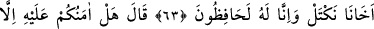
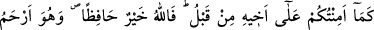
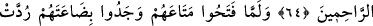
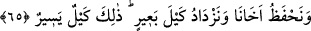

BÜNYAMİN’İN GÖNDERİLMESİ
63. Babalarına döndüklerinde dediler ki: “Ey babamız! Erzak bize yasaklandı.
Kardeşimizi (Bünyamin’i) bizimle beraber gönder de (onun sayesinde) ölçüp
alalım. Biz onu mutlaka koruyacağız.
64. (Yâkub) “dedi ki: “Daha önce kardeşi (Yûsuf) hakkında size ne kadar
güvendiysem, bunun hakkında da size ancak o kadar güvenirim! Allah en hayırlı
koruyucudur. O, merhametlilerin en merhametlisidir.
65. Yüklerini açtıklarında sermayelerinin kendilerine geri verildiğini gördüler.
Dediler ki: “Ey babamız! Daha ne istiyoruz? İşte sermâyemiz de bize geri verilmiş.
(Onunla yine) ailemize yiyecek getiririz, kardeşimizi koruruz ve bir deve yükü de
fazla alırız. Çünkü bu (seferki aldığımız) az bir miktardır.
Mısır’dan Ken’an’daki “babalarına döndüklerinde” yüklerini açmakla uğraşmazdan
önce “dediler ki: “Ey babamız! Erzak bize yasaklandı. Kardeşimizi” Bünyamin’i
“bizimle beraber” Mısır’a “gönder de” onun sayesinde dilediğimiz kadar erzak
“ölçüp alalım. Biz onu” başına herhangi bir kötü durum gelmesinden “mutlaka
koruyacağız.” Onu sana geri getirmeyi taahhüd ediyoruz.
Bu sözleriyle erzakın kendilerinden menedilmesinin sebebinin Bünyamin’in onlarla
birlikte gitmemesi olduğuna işaret ediyorlar. Âyet Yûsuf (a.s.) ile kardeşleri arasında
defalarca zahîre almak üzere yapılmış bir anlaşma olduğuna delâlet etmektedir.
Kâşifî der ki: Yûsuf (a.s.)’ın kardeşleri, Yâkub (a.s.)’a: “Eğer Bünyamin’i
götürmezsek Mısır meliki bize artık zahîre ölçüp vermemeye hükmetti.” dediler.
Kardeşleri, babalarına azizin kendilerine ne kadar iyi davrandığını da şöyle anlattılar:
“Biz öyle bir adamın yanına gitmişiz ki bizleri Yâkub oğullarından birinin bile
yapamayacağı ihsân ve ikrâmlarla misafir etti.” Şimon’u rehin alarak yanında
alıkoyduğunu da zikrettiler.